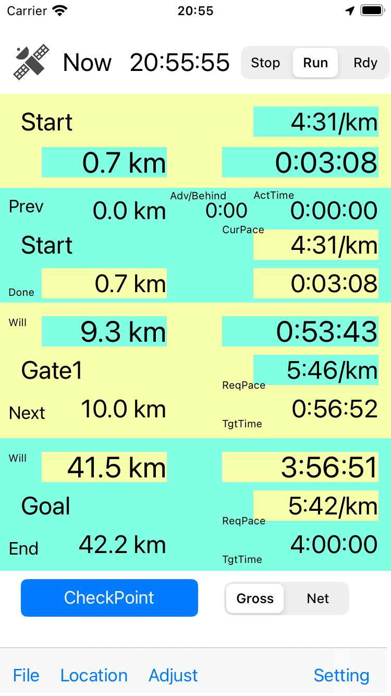
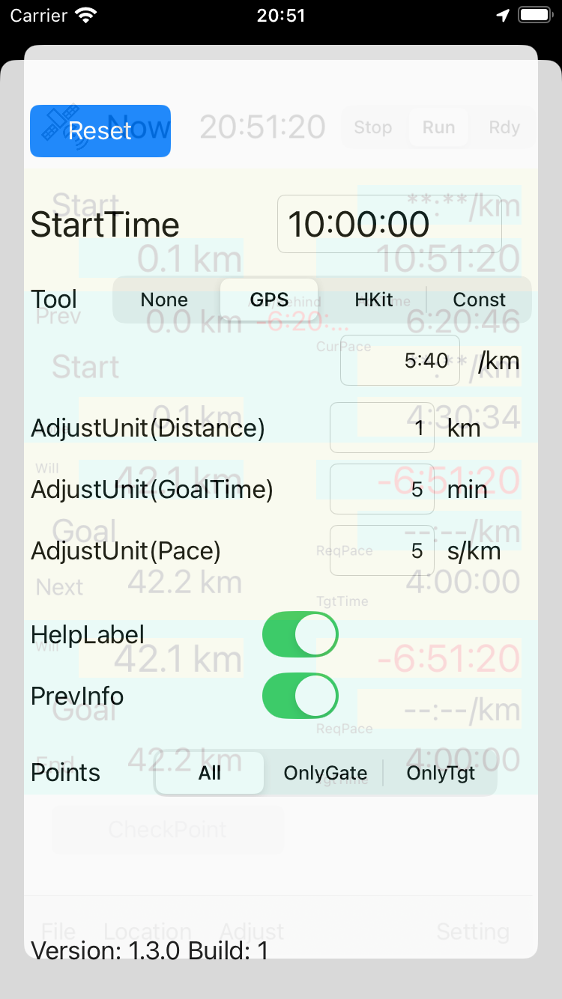
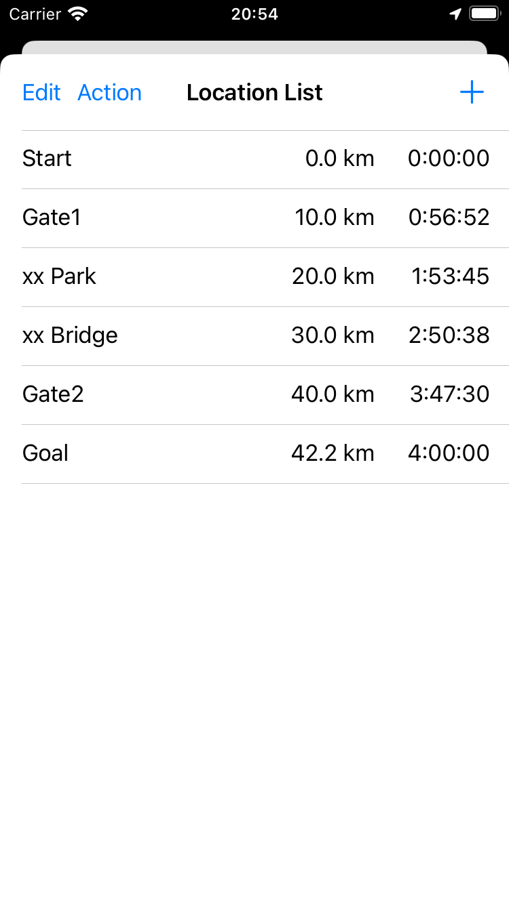
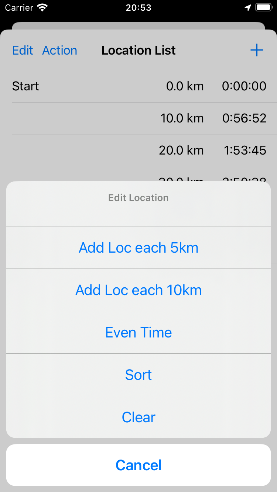
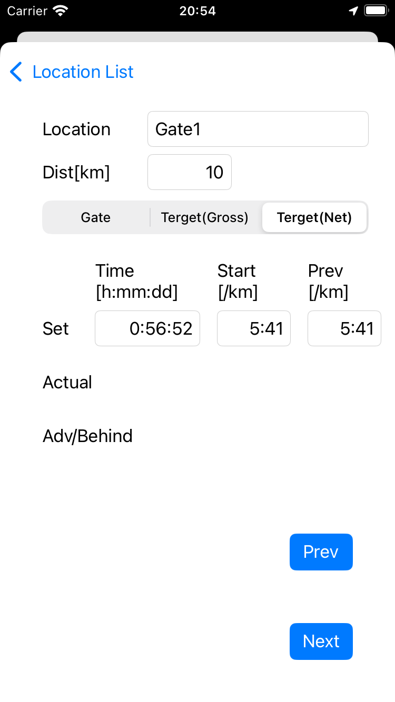
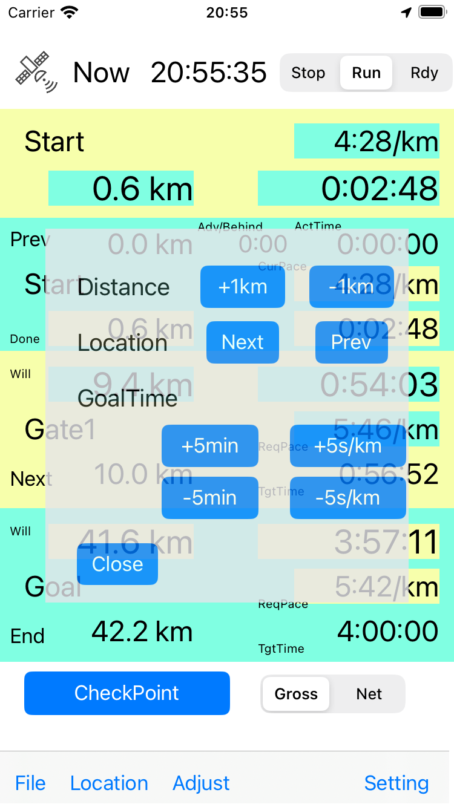
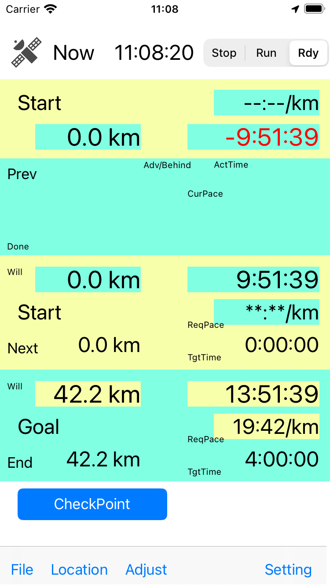

Time keeper tool for marathon runners.
Application checks time and distance and calculates required pace.
Did you write time/distance/pace on you arm ? You can get these information from the Application.
And it tells you updated information esspecially required pace.
App gets distance traveled from the start by GPS ( or HealthKit ).
And you can adjust distance as preset checkpoint.
Time is based since start time. Basically Application is clock. You can't stop clock.
Main screen has 4 blocks, information from start and previous point, and information to next point and goal.
Each block has traveled/remain distance and time, and actual/required pace.
And additonal information in previous block, time advanced or hehind is shown.
Time could be Checkpoint(Gate) time or your target time.
Checkpoint time is not editable on the fly. Target time is OK to change.
Target time could be set as net time(since start line) or gross time(since official start time).
You can adjust target goal time and pace on the fly. on adjust panel.
And adjust units are settable in preference page.
If you runs faster than your plan, you can use better target time.
Too much information in the screen could make you hard to read.
You can hide some. Some of previous information and item labels.
Default method of running distance is GPS. And HealthKit is OK to use.
HealthKit could have delay and slightly larger error.
And another way, constant mode. Distance is calculated by time with preset pace.
Logging actual time is not scope of the Application.
But you can save time and refer it for later races.
Caution:
Even though there are reduction of display items, much information might confuse you.
Please use Application before your race in order to be familier the Application.
Application has const mode, it runs automatically like demonstration.
Self review:
Chackpoint times are not tight for me and race is ultra marathon. I use it as memo of water-stations.
If required times are tight, information esspecially required pace could help me.
Versions:
ver.1.01 Fix issue of dialog timing
ver.1.02 Fix issue of check point during ready to start
ver.1.2.3 Modify location check method, during ready to start.
ver.1.3.0 Internationalization, Add English
Credit
App uses icons designed from "Flaticon", "ICOOON MONO".
Operation guide
|  |
 |
 |
 |
 |
 |
 |
Main screen. Info from start, Info from prev point, Info to next point, Info to goal |
Setup screen. Start time, Measurement method, Adjust unit |
Check-point list |
Menu for all check point |
Editing Location Information |
Adjust Distance and Goal Time |
Screen during ready to start |